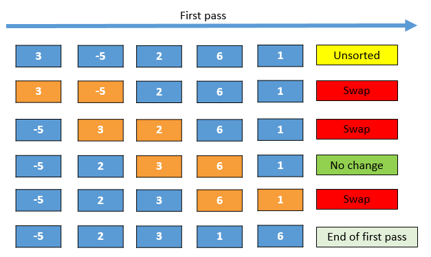

Bubble sort is usually the first sorting algorithm taught because it is a simple sorting algorithm that repeatedly steps through the list to be sorted, compares each pair of adjacent items and swaps them if they are in the wrong order.
(source google images)
| Sort | Desc Order |
| Status | |
| Runtime Complexity (Big-O notation) | For array with the size of N items, The algo requires N steps to complete first Pass
but it requires N-1 steps for Pass 2.
Similarly, It will take N-2 steps for Pass 3 and so on for subsequent passes. So, Using bubble sort, the total number of steps required are: N + (N-1) + (N-2) + ... ≈ (N * (N-1)) / 2 ≈ N² |
Big O efficiency:
|